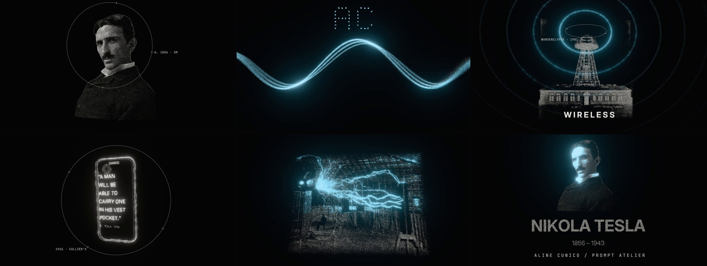

A 43-second narrated film made entirely in code with Claude. One field of light that never cuts: it condenses into each image of Tesla’s life, then streams into the next.
The spark was a YouTube video where particles become the images. I kept that grammar (a photo dissolving into dust, numbers made of dots, one object multiplied into grids) and asked for something completely different from anything we’d made before.
Using the motion-studio skill, create a video about Tesla. Here is the script and voiceover. Visually inspired by this video, which uses particles that make the image. Something completely different from what we have done before, but absolutely amazing. What do you need from me, and which tools will you use?
Real public-domain archive images, not generated ones: the 1890 Sarony portrait, Wardenclyffe Tower, the Colorado Springs lab, patent 381,968 and NASA’s Black Marble. Brightness becomes particle density and depth is computed in code, so the camera can move around a photograph. The phone, the bulb and the name are built in code.
Whisper gave every word a timestamp, and each image condenses on its word. Every particle keeps its place across all twelve images, so shapes flow into shapes instead of collapsing into fog; in between, the field swirls like plasma. The film is silver on black, and electric blue appears only when electricity does.
One Suno track, cut on bar lines: the drop hits on “Tesla saw”, a splice 82 bars ahead hides in the quiet bars, and the final hit lands on “We’re living in it”. After the drop the whole field breathes on the kick.
I really like it. Think as a senior motion graphics designer and creative director: is there anything you would improve?
Five changes made it: the Earth’s city lights pull into Tesla’s face for the ending; a flat grey “DC” line that “AC power!” bends into a blue wave; fewer plasma transitions and more match cuts and lightning cuts; the beat pulse; and a phone carrying Tesla’s own 1926 words.
